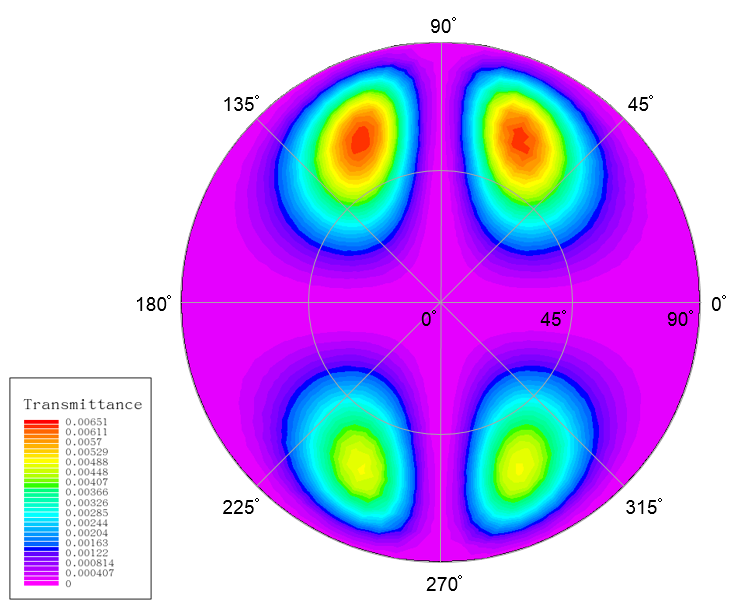
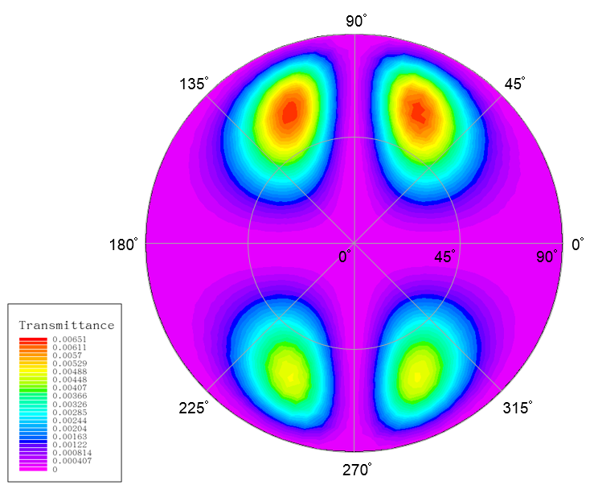
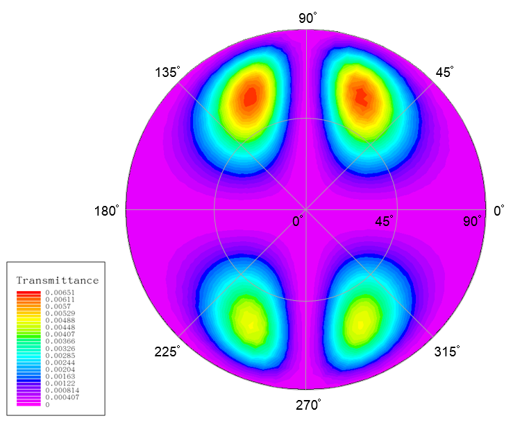

| Requires: | Victory Process / Clever |
| Minimum Versions: | Victory Process 7.22.0.R / Clever 3.11.6.C or Later |

This example demonstrates the electrical and optical simulation of a liquid crystal (LC) cell in the in-plane switching (IPS) mode. On one hand, the LC director reorientation in the presence of external electric field is calculated by a finite element method. On the other hand, the optical transmission of a light beam traveling through the LC cell is calculated by the extended Jones matrix method.
This example is related to the 2017 Silvaco Simulation Standard article: "Optical Simulation of Liquid Crystals in the In-plane Switching Mode".
Everything about the optical part is specified in the optics statement. An existing structure file which is the output from an electrical simulation is necessary and can be imported via structure. The corresponding bias voltage is defined in pixelvolt. A tabular file with the dispersion relation of the complex refractive index of the LC is assigned to indexfile. The propagation direction of the light source is defined in lightorient. Appropriate optical grids need to be specified by dx, dy, and dzmax.
There are two types of polarizers in the optical simulation. One type is the ideal polarizer whose physical thickness is zero. The optic axis in the beam-incident plane is defined in polanglestart and that in the beam-outgoing plane is defined in polangleend. The corresponding real part of the polarizer?s refractive index is specified in polindexstart and polindexend. Another type of polarizers is the non-ideal polarizer which is a birefringent optical layer. The ideal polarizer must be first disabled by setting its polarization angle out of the range between -90 and 90 degrees. The properties of the non-ideal polarizer is specified in StartEndLayers(). The first six variables of this function are the layer thickness, optic axis, no, ne, ko, and ke for the polarizer at the incident plane, while the last six are related parameters for the one at the emitting plane.
The fixed beam wavelength is defined in wavelength and the fixed incident angle is defined in angle. The transmission pattern is saved to the file assigned to topview. The wavelength sweep simulation is trigged by specifying a wavelength range in wlsweep(). The output spectral file is specified in outspec. The angular sweep is done by specifying the scan range of the polar and the azimuthal angle in anglesweep() and thetasweep() , respectively. The angular distribution of the transmission is saved to the file assigned to angleview.
To load and run this example, select the Load button in DeckBuild > Examples. This will copy the input file and any supporting files to your current working directory. Select the Run button in DeckBuild to execute the example.